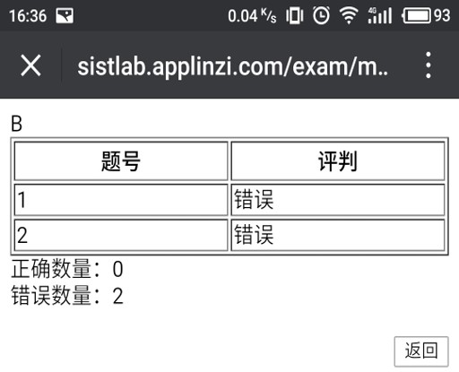
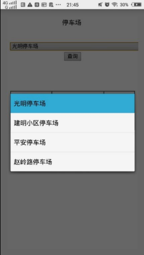
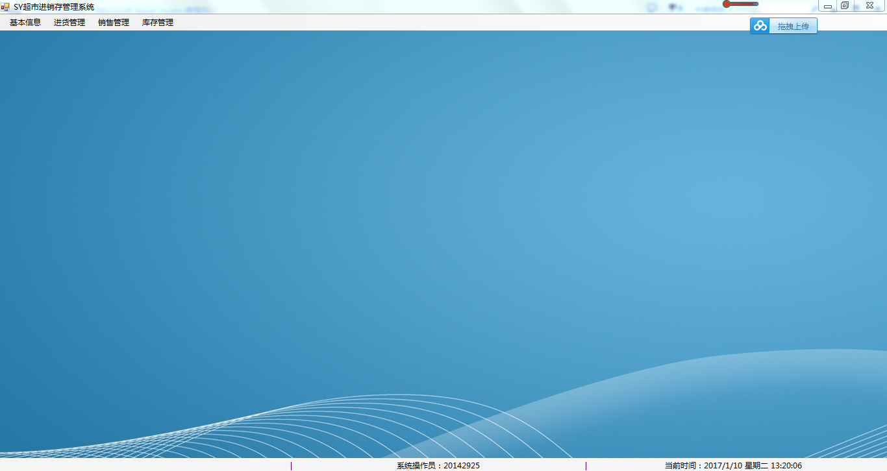

个人技能
★熟练地使用Visual Studio、Eclipse、Android Studio等编程软件
★熟练地使用sqlserver、MySQL、oracle等数据库软件
★通过全国英语四级考试
★计算机水平计算机类专业
★全国普通话水平测试二级甲等
随堂微考
停车场管理系统
超市进销存管理系统
在校任职与工作经历
获奖经历
★2016年参加大学生创新创业大赛获得校二等奖，参与完成作品《自行车立式停车架网络化管理平台》
★2016年度石家庄铁道大学“创青春”创业大赛三等奖参与完成作品《随堂微考》
★2016年石家庄铁道大学健美操大赛团体三等奖
★2015年石家庄铁道大学信息科学与技术学院第二届礼仪文化大赛三等奖